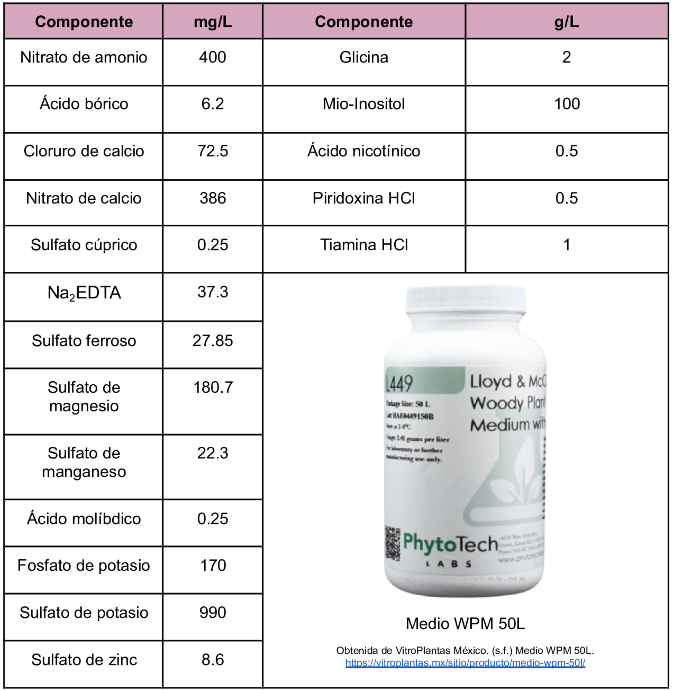

Medio para el cultivo de especies vegetales leñosas, originalmente diseñado para puntas de brotes de Mt. Laurel
Composición
Medio para el cultivo de especies vegetales leñosas, originalmente diseñado para puntas de brotes de Mt. Laurel
Composición

Torres, K. PhytoTechnology Laboratories. (2017) L449 Lloyd & McCown Woody Plant. Basal Medium with Vitamins. https://genexpress.cl/wp-content/uploads/2023/02/PL.L449-50.pdf
VitroPlantas México. (s.f.) Medio WPM 50L. https://vitroplantas.mx/sitio/producto/medio-wpm-50l/